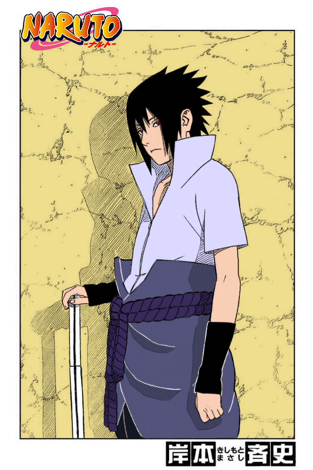
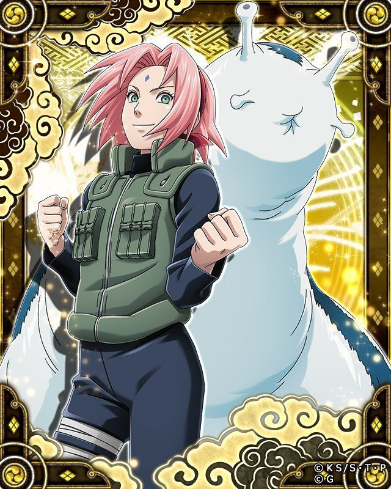
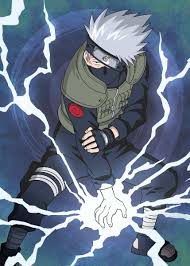
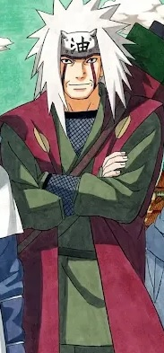

Naruto Uzumaki
Naruto starts as an underestimated outcast and grows into a hero who inspires others through perseverance, loyalty, and empathy. He refuses to abandon anyone—even enemies.
Backstory (summary)
Naruto’s childhood is shaped by isolation and a desire to prove himself. Over time, he earns respect by protecting others and stepping up when it matters most.
Abilities
- Shadow Clone Technique (creative tactics)
- Rasengan (signature chakra attack)
- High stamina and endurance
- Strong leadership and teamwork focus
Personality
- Determined and optimistic
- Protective of friends
- Can be impulsive but learns fast

Sasuke Uchiha
Sasuke is an Uchiha prodigy shaped by tragedy. His drive for revenge pushes him to seek power, but his journey forces him to rethink loyalty and justice.
Backstory (summary)
Sasuke’s identity is tied to his clan. He believes strength is the only way to prevent helplessness, and this belief drives many of his biggest decisions.
Abilities
- Sharingan (visual jutsu, perception, prediction)
- Lightning Style + Chidori
- Swordsmanship and speed-based fighting
- Strong tactical intelligence
Personality
- Quiet, focused, intense
- Highly competitive
- Slow to trust but deeply committed

Sakura Haruno
Sakura becomes an elite medical ninja through discipline and intelligence. She’s a key support fighter who can heal teammates and deliver heavy hits in combat.
Backstory (summary)
Starting with strong academics, Sakura trains to become dependable in battle. Real missions push her to grow into a confident ninja who can protect others.
Abilities
- Advanced medical ninjutsu
- Exceptional chakra control
- Superhuman strength
- Battlefield healing & support
Personality
- Focused and hardworking
- Protective of allies
- Mentally tough under pressure

Kakashi Hatake
Kakashi is a veteran jōnin and Team 7 mentor known for strategy and calm leadership. He teaches teamwork and survival before ego and glory.
Backstory (summary)
Kakashi’s past includes major loss, shaping his priorities as a leader. He focuses on protecting his team and making smart decisions under pressure.
Abilities
- Lightning Blade (Chidori variant)
- Strong ninjutsu variety and adaptability
- Stealth, tracking, and intelligence skills
- Battle planning and leadership
Personality
- Composed and observant
- Dry humor, calm under stress
- Protective mentor

Jiraiya
Jiraiya is one of the Legendary Sannin—an elite ninja and writer who trains future leaders, gathers intelligence, and fights using powerful toad-based techniques.
Backstory (summary)
Despite his goofy behavior, Jiraiya takes responsibility seriously. He travels for intel and to protect the bigger picture, mentoring the next generation to create a better future.
Abilities
- Toad summoning techniques
- Sage Mode (senjutsu power boost)
- Rasengan mastery
- Reconnaissance/espionage experience
Personality
- Wise but eccentric
- Protective mentor
- Strong moral compass